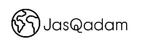
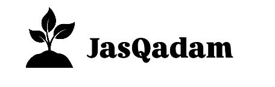
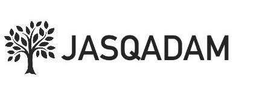
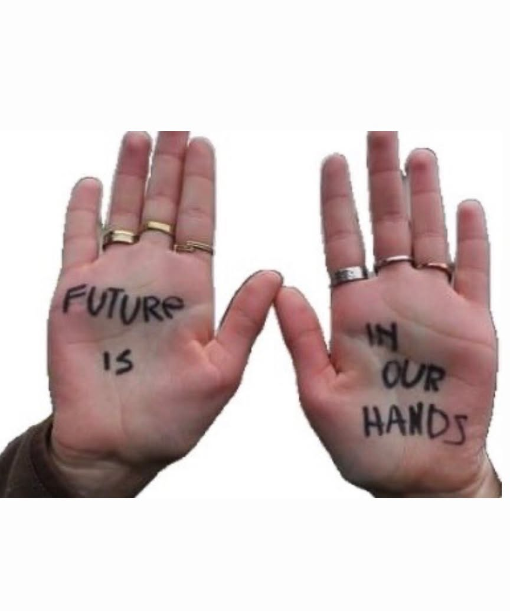

Қоғамға көмектес! Табиғатты қорға! Болашағыңды бірге құр
Бұл Есік қаласы мен оның маңындағы жас волонтерлерді біріктіріп, волонтерлік қозғалысты дамытуға бағытталған онлайн-платформа. Сайтты В.Терешкова атындағы жалпы орта мектебінің 10-сынып оқушылары құрды. Жобаны мектеп мұғалімдері мен завучтары қолдауымен жасалды. Біздің мақсатымыз Есік қаласы мен оның маңындағы әрбір тұрғынға волонтерлік қозғалысқа қосылуға, жаңа бастамалар мен іс-шаралар туралы білуге, сондай-ақ қала өміріне өз үлесін қосу мүмкіндіктерін табуға мүмкіндік береміз Платформада соңғы жаңалықтармен танысып, волонтерлік жобалар туралы ақпарат алып, ұйымдастырушылармен қалай байланысуға болатынын біле аласыз
-

-

-


Добрые дела начинаются с тебя
Это онлайн-платформа, объединяющая молодых волонтёров города Есик и его окрестностей и направленная на развитие волонтёрского движения. Сайт был создан ученицами 10-го класса школы имени В. Терешковой. Проект был поддержан учителями и заместителями директора школы. Наша цель дать каждому жителю города Есик и его окрестностей возможность присоединиться к волонтёрскому движению, узнавать о новых инициативах и мероприятиях, а также находить возможности внести свой вклад в жизнь города. На платформе вы можете ознакомиться с последними новостями, получить информацию о волонтёрских проектах и узнать, как связаться с их организаторами
Together,we make room for change
This is an online platform that brings together young volunteers from the city of Issyk and its surrounding areas and aims to promote and develop the volunteer movement. The website was created by 10th-grade students of V. Tereshkova School. The project was supported by the school’s teachers and deputy principals. Our goal is to give every resident of Issyk and the surrounding areas an opportunity to join the volunteer movement, learn about new initiatives and events, and find ways to contribute to the life of the city. On our platform, you can stay up to date with the latest news, learn more about volunteer projects, and find out how to contact their organizers